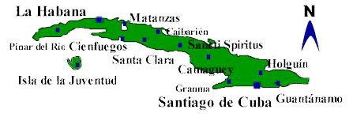
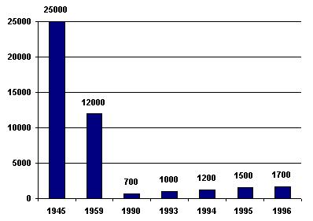

|
|
|
|
|
Ciudades con población judía

Sinagogas
Beth Shalom Calle I esq. 13 - Vedado La Habana Cuba Tel: (537) 328953
Fax: (537) 333778Centro Sefaradi Calle 17 esq. E - Vedado
La Habana - CubaTel: (537) 326623 Adath Israel Acosta y Picota
Ciudad de La Habana CubaTel: (537) 613495 Hatikva Corona # 273
Santiago de Cuba - CubaTel: (53) (226) 86180
Fax: (53) (226) 23768Comunidades Hebreas en Cuba
Ciudad Numero de Judíos La Habana 1.200 Cienfuegos 30 Santa Clara 30 Camagüey 140 Santiago de Cuba 90 Guantánamo 70 Caibarien 30 Sancti Spiritus 40 Granma 43 Población

También puedes visitar:
| Página Principal | Historia de la Comunidad | Sinagoga de Hoy | Eventos Importantes |
| Comunidad Hebrea Cuba |